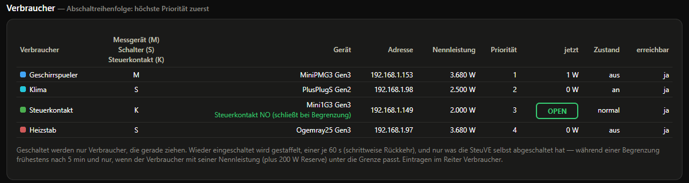
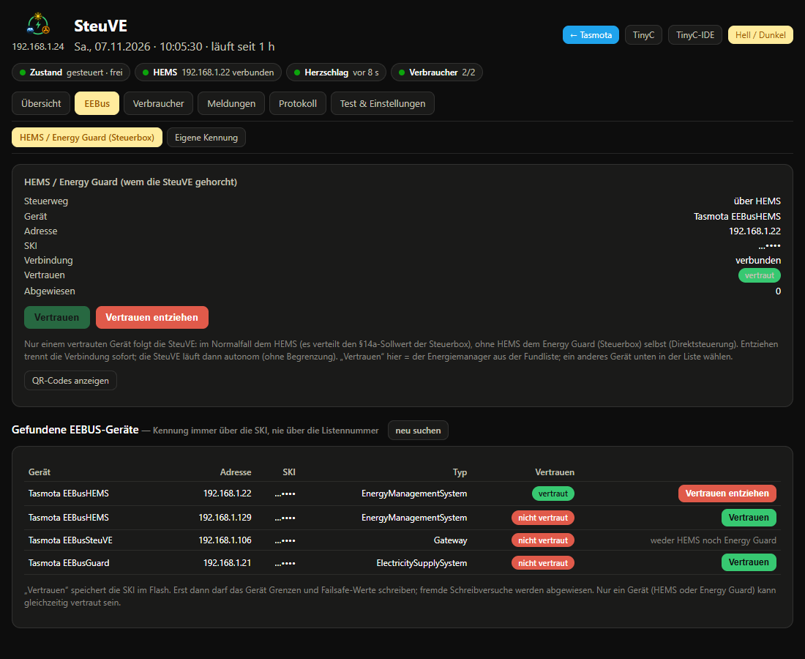
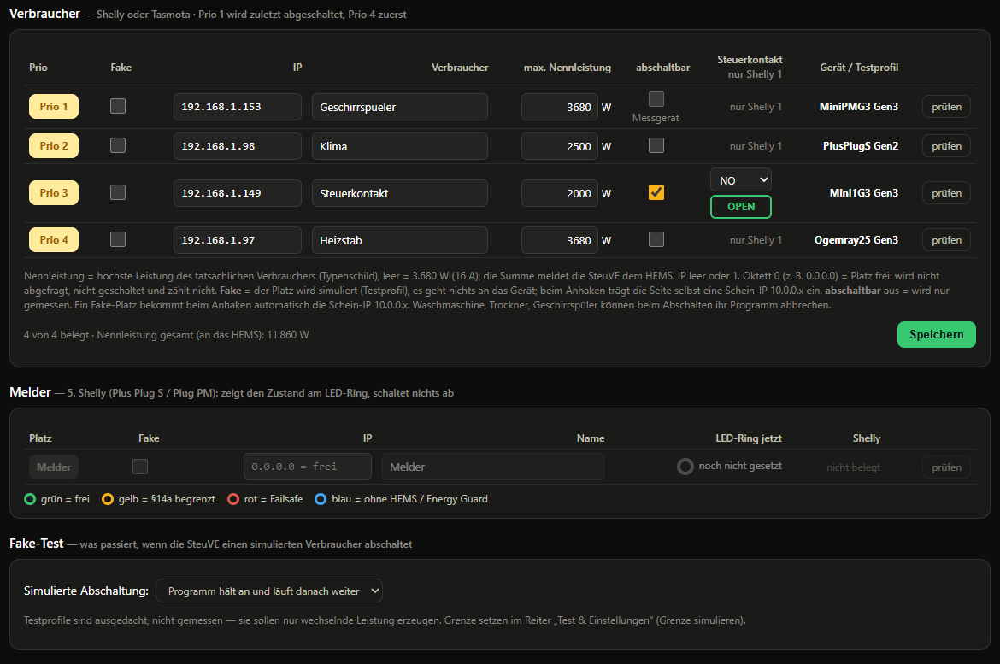
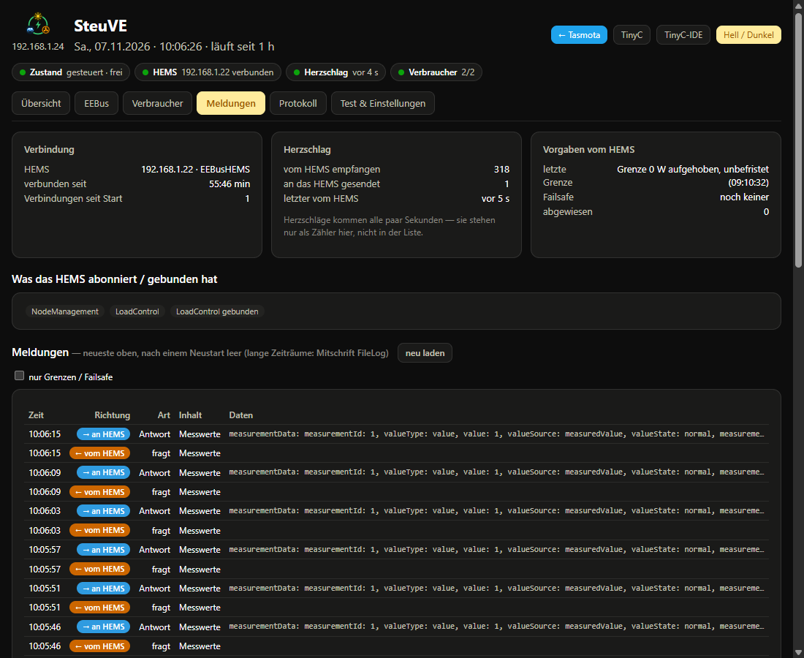
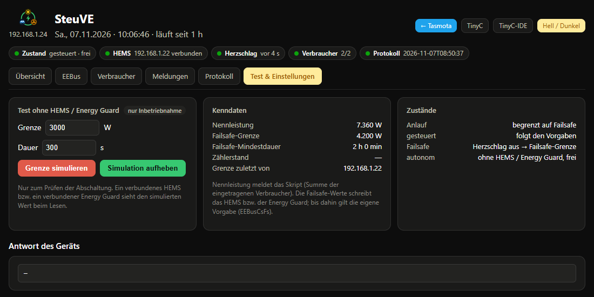

xdrv_128 v039) + TinyC-Skript steuve v022 (@version 20261122_2000) · Persönliche Daten in den Bildern unkenntlich gemacht (Adressen auf 192.168.1.x umgeschrieben, Kennungen verdeckt)xdrv_128 ist um eins kleiner: Firmware v037 = Treiber v036, Firmware v038 = Treiber v037, Firmware v039 = Treiber v038, Firmware v040 = Treiber v039. Wo bei älteren Ständen „Treiber v0xx“ steht, ist die Treiber-Nummer gemeint.txtvers im mDNS-Eintrag, dnsSd_mDns (Abschnitt 14.3).EEBusCsTrust <SKI> (oder „Vertrauen“ im Reiter EEBus), sonst kann das HEMS es nicht anrufen (Abschnitt 4). Notweg EEBusCsStreng 0 nur zum Testen.„SteuVE“ steht für steuerbare Verbrauchseinrichtung. Das Gerät heißt auf seiner Seite „EEBUS-SteuVE-Gateway“, weil es für beliebige Verbraucher dahinter spricht; in dieser Anleitung kurz „Gateway“ oder „SteuVE“. Es stellt sich per EEBUS wie eine Wärmepumpe oder Wallbox vor und nimmt eine § 14a-Bezugsgrenze (Use Case LPC) entgegen. Dahinter hängen bis zu vier Shelly- oder Tasmota-Geräte:
Die Teile:
xdrv_128 – spricht EEBUS mit dem Energy Guard (HEMS oder Steuerbox), empfängt Grenze und Failsafe-Werte, meldet Leistung und Nennleistung und sagt Grenzen zu oder lehnt sie ab.steuve (Slot 0) – fragt die Verbraucher ab, meldet die Summe an den Treiber, schaltet nach Priorität, stellt die Steuerkontakte und sagt dem Treiber in jeder Runde, wie weit es herunterkommt. Ohne laufendes Skript nimmt das Gateway keine Grenze an (Abschnitt 8).steuve.html auf der SD-Karte; das Gerät liefert zuerst die gepackte steuve.html.gz aus (Abschnitt 12).Kette: Netzbetreiber → Steuerbox → HEMS (teilt auf) → Gateway → Verbraucher. Ohne HEMS kann die Steuerbox das Gateway auch direkt steuern (Direktsteuerung). Nach BK6-22-300 Anlage 1 Ziff. 4.4 gilt für jede SteuVE entweder das eine oder das andere: Sie vertraut entweder dem HEMS oder der Steuerbox, nie beiden.
| Was | Wo / Wert | Warum |
|---|---|---|
| Vorlage | Waveshare ESP32-S3-ETH SDIO(Einstellungen → Vorlage) | Die SD-Karte hängt per SDIO 1-Bit am ESP32-S3: GPIO5 = D0, GPIO6 = CMD, GPIO7 = CLK. Beim Start steht im Log UFS: SDCard mounted (SDIO 1-bit). Auf der SD-Karte liegen Bedienseite, Protokolle und Verbraucherliste. |
| HTTP API aktivieren | Haken setzen (Einstellungen → Weitere Einstellungen; entspricht SetOption128 1) | Ohne den Haken weist Tasmota Abrufe ohne Herkunftsangabe ab (im Log HTP: Referer '' denied): Die Seite bleibt beim direkten Aufruf leer, und Befehle von außen (/cm?cmnd=…) werden abgewiesen. |
| Firmware | gebaut mitCONFIG_FREERTOS_IDLE_TASK_STACKSIZE=3072 | Mit dem Vorgabewert 1024 Byte kann der ESP32-S3 mit LAN-Chip W5500 unter Last abstürzen (DebugException beim Taskwechsel). Gemessen auf einer Steuerbox: unter Last blieben von 1024 nur 80 Byte frei, mit 3072 über 2200. Beim Bauen in der Bauvariante (custom_sdkconfig) eintragen. |
| Skript mit Autostart | TinyC → Slot 0: Skript steuve geladen, Knopf A grün | Das Skript muss nach jedem Start von selbst laufen. Läuft es nicht, lehnt das Gateway (seit Firmware v037) jede Grenze ab (Abschnitt 8). |
Auf der Tasmota-Hauptseite auf „SteuVE“ klicken. Darüber zeigt das Skript einen Kurzstand: Zustand, Summe und die Leistung je Verbraucher, bei einem Steuerkontakt seine Stellung. Fehlt dieser Kurzstand, läuft das Skript nicht (Abschnitt 8).
Oben rechts auf der Seite:
Die Statuszeile darunter zeigt immer: Zustand, HEMS bzw. Energy Guard (verbunden/getrennt), Herzschlag (wann zuletzt) und Verbraucher (erreichbar/belegt; „Skript fehlt“, wenn das Skript nicht antwortet), sobald es Protokollzeilen gibt zusätzlich Protokoll mit der Zeit der letzten Zeile.
Eine SteuVE wird auf einem von zwei Wegen gesteuert (BK6-22-300 Anlage 1 Ziff. 4.4): über ein HEMS (Ziff. 4.4 b – die Steuerbox gibt dem HEMS einen Gesamtwert, das HEMS teilt ihn auf) oder direkt von der Steuerbox (Ziff. 4.4 a). Die Übersicht zeigt, welcher Weg gerade gilt.


| Spalte | Bedeutung |
|---|---|
| Messgerät (M) Schalter (S) Steuerkontakt (K) | Was das Gerät kann bzw. wofür es eingetragen ist: M = Messgerät ohne Relais (z. B. PM Mini, EM, 3EM, Tasmota ohne Relais) – kann nie abschalten S = Gerät mit Relais – kann abschalten K = Steuerkontakt (Shelly 1, Abschnitt 6) – darunter steht NC oder NO ? = noch nicht erkannt · ein Fake-Platz zählt als S Ob ein Schalter wirklich abgeschaltet werden darf, legt der Haken „abschaltbar“ im Reiter Verbraucher fest. |
| jetzt | aktuelle Leistung; „?“ = Gerät antwortet nicht beim Steuerkontakt die zurückgelesene Stellung: grün OPEN/CLOSE = Normalstellung, gelb = Begrenzungsstellung |
| Zustand | an / aus, oder rot „von SteuVE aus“ beim Steuerkontakt „normal“ oder „begrenzt · von SteuVE“ |
| erreichbar | ja · „Aussetzer n“ (einzelne Antworten fehlten) · nein (3 Runden in Folge keine Antwort) |
Wird die Seite schmal (Handy), lässt sich die Liste seitlich schieben; die Zeilen brechen nicht um.
Der Reiter hat zwei Unterreiter. Vorne steht „HEMS / Energy Guard (Steuerbox)“ – das braucht man im Alltag. „Eigene Kennung“ braucht man nur beim Koppeln und beim Sichern.

EEBusCsTrust <SKI> bzw. EEBusCsTrust hm), sonst kann das HEMS es nicht anrufen. Bis Firmware v037 durfte jeder Anrufer verbinden; schreiben durfte auch dort nur der vertraute.EEBusCsStreng 0 lässt jeden Anrufer zu und vertraut auch ohne Zertifikat. Der Schalter wird nicht gespeichert; nach einem Neustart gilt wieder die strenge Prüfung.Nur ein Energy Guard kann vertraut sein. Nur er darf Grenzen und Failsafe-Werte schreiben; fremde Schreibversuche werden abgewiesen (Zähler „Abgewiesen“). Vertrauen entziehen trennt sofort; das Gateway läuft dann autonom ohne Begrenzung und ruft die alte Gegenstelle auch nicht von selbst wieder an. Ein neues Vertrauen wirkt ebenfalls sofort, ein Neustart ist nicht nötig.
Steuerweg zeigt „über HEMS“ oder „Direktsteuerung (Energy Guard = Steuerbox)“. Steht dort „unbekannt — Gerät nicht in der Fundliste“, ist der vertraute Energy Guard nur noch nicht in der Liste (z. B. nach dem Einschalten): neu suchen klicken. Die Steuerung selbst läuft trotzdem.
EBG: SteuVE: Energy Guard hat getrennt - eigener Wiederaufbau zu … in 10 s. Bis Firmware v038 wartete das Gateway in diesem Fall, bis der Energy Guard wieder anrief (Abschnitt 15).
EEBusCsTyp.eebus_cert.der, eebus_key.der). Die Schlüsseldatei ist geheim – sicher ablegen.
| Spalte | Bedeutung |
|---|---|
| Prio 1 … 4 | Abschaltreihenfolge: Prio 4 wird zuerst abgeschaltet, Prio 1 zuletzt |
| Fake | Platz wird simuliert (Testprofil), es geht nichts ins Netz. Die Seite trägt dann selbst eine Schein-Adresse 10.0.0.x ein. |
| IP | Adresse des Shelly- oder Tasmota-Geräts. Leer oder erstes Oktett 0 = Platz frei (wird nicht abgefragt, nicht geschaltet, zählt nicht) |
| Verbraucher | Name (höchstens 15 Zeichen), erscheint in Übersicht, Kurzstand und Protokoll |
| max. Nennleistung | höchste Leistung des tatsächlichen Verbrauchers (Typenschild). Leer = 3.680 W (16 A). Die Summe aller belegten Plätze meldet das Gateway dem HEMS als Nennleistung. |
| abschaltbar | an = darf bei einer Begrenzung abgeschaltet bzw. umgelegt werden aus = wird nur gemessen und mitgemeldet gesperrt mit „Messgerät“ darunter = das Gerät hat kein Relais und kann nicht abschalten |
| Steuerkontakt | – kein = normaler Verbraucher · NC / NO = Steuerkontakt (Abschnitt 6) Nur beim Shelly 1 wählbar, sonst steht dort „nur Shelly 1“. |
| Gerät / Testprofil | erkanntes Gerät (Shelly-Modell und Generation oder „Tasmota 1 Relais“, „Tasmota Messung“ usw.). prüfen fragt das Gerät in der nächsten Runde neu ab. |
Nach dem Ändern Speichern klicken – es erscheint „✓ gespeichert“. Etwa eine Sekunde später meldet das Gateway die neue Nennleistung an das HEMS.
| Art | Beispiele | M/S/K | Funktion |
|---|---|---|---|
| Gen2+ mit Schalter | Plus 1PM, Plus Plug S, Pro 1PM, Gen3/Gen4-Schalter | S | messen und schalten |
| Gen1 Relais mit Messung | Shelly 1PM, Plug S (Gen1) | S | messen und schalten |
| Shelly-1-Familie (potentialfrei, ohne Messung) | Shelly 1 (Gen1), Plus 1, Plus 1 Mini, 1 Gen3, 1 Gen4, 1 Mini Gen3, 1 Mini Gen4 | K | Steuerkontakt umlegen und zurücklesen (Abschnitt 6) |
| Gen2+ PM1 | PM Mini Gen3 | M | nur messen |
| Gen2+ EM1 | Pro EM, EM Gen3 | M | nur messen |
| Gen2+ EM (3 Phasen) | Pro 3EM | M | nur messen (Summe aller Phasen) |
| Gen1 EM / 3EM | Shelly EM, Shelly 3EM | M | nur messen (Summe aller Kanäle) |
Reine Messgeräte werden nie geschaltet; beim Erkennen nimmt das Skript den Haken „abschaltbar“ selbst heraus, und die Seite sperrt ihn.
Antwortet ein Gerät nicht wie ein Shelly, fragt das Skript es als Tasmota-Gerät ab (Befehl Status, danach Status 10 für die Energiemessung).
| Anzeige | Gerät | M/S | Funktion |
|---|---|---|---|
| Tasmota 1 Relais (bzw. 2, 3 … Relais) | Steckdose oder Leiste mit Energiemessung | S | messen und schalten |
| Tasmota Messung | Messgerät ohne Relais | M | nur messen |
| Tasmota ohne Messung | Gerät ohne Energiemessung | M | nicht nutzbar (liefert keine Leistung) |
| Tasmota: Passwort? | Gerät mit Web-Passwort | ? | nicht nutzbar, siehe unten |
Power0), weil eine Leiste meist nur einen Messkreis hat.Viele Wärmepumpen und Wallboxen haben einen eigenen Steuereingang für die Steuerung durch den Netzbetreiber, z. B. einen EVU-Sperr- oder SG-Ready-Eingang an der Wärmepumpe oder einen Freigabe- bzw. Begrenzungseingang an der Wallbox. An diesen Eingang wird der potentialfreie Kontakt eines Shelly 1 angeschlossen. Bei einer § 14a-Begrenzung legt das Gateway den Kontakt um; das Gerät erkennt das an seinem Eingang und regelt selbst herunter.
Steuerkontakt kann nur ein Gerät der Shelly-1-Familie sein – Relais mit potentialfreiem Kontakt, ohne Messung: Shelly 1 (Gen1), Plus 1, Plus 1 Mini, 1 Gen3, 1 Gen4, 1 Mini Gen3, 1 Mini Gen4. Das Skript erkennt sie an der Kennung, die der Shelly über /shelly meldet. Am Gerät erprobt ist der Shelly 1 Mini Gen3; die Kennungen der anderen stammen aus der Shelly-Dokumentation.
Steckdosen und Schalter mit Messung (Plus Plug S, Plus 1PM usw.) schalten die Last selbst und sind normale Verbraucher (S). Tasmota-Geräte können kein Steuerkontakt sein.
In der Shelly-App oder auf der Weboberfläche des Shelly:
restore_last).detached). Sonst legt ein Taster oder Schalter am SW-Eingang den Steuerkontakt mit um – der SW-Eingang schaltet beim Shelly 1 das eigene Relais und ist keine Rückmeldung.NC/NO beschreibt den Steuereingang des Geräts: wie der Kontakt im Normalbetrieb (ohne Begrenzung) steht.
| Einstellung | Normalstellung (frei) | bei Begrenzung | passt, wenn das Gerät … |
|---|---|---|---|
| NC – normally closed „normal geschlossen“ | Relais ein = CLOSE | Relais aus = OPEN | … bei offenem Kontakt begrenzt |
| NO – normally open „normal offen“ | Relais aus = OPEN | Relais ein = CLOSE | … bei geschlossenem Kontakt begrenzt |
restore_last), und das Gateway korrigiert die Stellung in der nächsten Runde (6.7).Über die Konsole geht dasselbe in zwei Schritten (Beispiel Platz 3, Adresse 192.168.1.80, 11.000 W):
STVSET 3,0,1,192.168.1.80,11000,4,Waermepumpe STVKONT 3,NC
STVSET (Platz, Fake 0, abschaltbar 1, IP, Nennleistung, Testprofil, Name) zuerst: Eine neue Adresse setzt den Steuerkontakt des Platzes zurück. STVKONT p,- macht den Platz wieder zum normalen Verbraucher. Während einer Begrenzung lässt sich ein Kontakt, den das Gateway umgelegt hat, nicht ändern („erst nach der Begrenzung ändern“).
STVKONT: Der Befehl nimmt weiterhin STVKONT p,NC,W,Eingang an (ältere Seiten schicken das). Seit Skript v014 wird die Leistung W nicht mehr verwendet und seit v015 der Rückmeldeeingang nicht mehr – bestätigt wird nur über das Zurücklesen des Relais. Bei „abschaltbar“ hilft STVKONT nicht: Der Haken kommt aus STVSET (3. Feld = 1) bzw. von der Seite.Nur wenn alle drei Bedingungen erfüllt sind (Skript v019, im Skript kontaktAktiv):
Fehlt eine Bedingung, ist der Platz ein normaler Verbraucher: Er wird gemessen und zählt mit seiner Leistung in Summe und Zusage. Ein Gerät, das kein Shelly 1 ist, aber noch NC/NO eingetragen hat, erzeugt im Log einmal STV Prio n … ist kein Shelly 1 - nicht als Steuerkontakt zugelassen. In der Antwort von STVKONT zeigt das letzte Feld aktiv (1/0), ob der Platz wirklich als Steuerkontakt arbeitet.
/relay/0, Gen2+ Switch.GetStatus) und traut nicht der Schaltantwort. Stimmt die Stellung, ist der Kontakt „bestätigt“, sonst „NICHT bestätigt“. Steht ein Kontakt schon richtig, gilt er ebenfalls als bestätigt und „von SteuVE“.| Lage | Was das Gateway tut |
|---|---|
| Eine Antwort des Shelly fehlt (eine Runde) | Die Zusage ist unbekannt (EEBusCsReady -1). Jede neue aktive Grenze wird abgelehnt (NACK), bis der Kontakt wieder antwortet und bestätigt ist. |
| Stellung nach dem Umlegen nicht bestätigt | wie oben: Zusage unbekannt; im Kontakt-Protokoll „NICHT bestaetigt“. |
| 3 Runden in Folge keine Antwort (rund 30 s) | Platz „antwortet nicht“, das Gateway meldet dem HEMS „Verbrauch unbekannt“ statt einer Zahl. Es versucht nicht mehr zu schalten, bis der Shelly wieder antwortet. |
| Während einer angenommenen Grenze | Die Grenze bleibt aktiv (Skript v022, siehe 7.3). Nach 2 Runden steht im Kontakt-Protokoll „nicht eingehalten - Grenze bleibt aktiv“. Der Energy Guard sieht die Lage am gemeldeten Verbrauch („unbekannt“) und kann neu verteilen. |
| Shelly wieder da | Das Gateway stellt die passende Stellung her (Begrenzung oder Normalstellung), liest zurück und sagt wieder zu. |
EEBusCsFail). Das ist nach dem Use Case LPC einer Einrichtung, die nicht selbst Energiemanager ist, nur aus Selbstschutz, Sicherheit oder rechtlichen Gründen erlaubt ([LPC-923]); deshalb seit v022 nicht mehr (Abschnitt 14)./steuve_kontakt.csv (Nachweis)Für die Steuerkontakte schreibt das Skript jedes Ereignis in eine eigene Datei – nur anhängen, nie überschreiben, bei SD-Karte dort. Sie ist der Nachweis, wann welcher Kontakt wie stand (BNetzA BK6-22-300 Anlage 1 Ziff. 7.2–7.4; nach dem LPC-Leitfaden IG 4.1.5 protokolliert, wer sein ACK auf eigene Informationen stützt, diese Informationen). Abrufbar über die TinyC-IDE (Port 82) oder die Dateiverwaltung von Tasmota.
| Spalte | Inhalt |
|---|---|
| Zeit | Ortszeit, z. B. 2026-11-21T13:27:06 |
| Ereignis | Begrenzung Beginn · Begrenzung Ende · umgelegt (Begrenzung) · zurueck (normal) · bestaetigt · NICHT bestaetigt · nicht eingehalten - Grenze bleibt aktiv (ab v022; bis v021 „nicht eingehalten -> EEBusCsFail“) · Normalstellung wiederhergestellt |
| Prio, Name | Platz und Name (bei Beginn/Ende/nicht eingehalten „-“) |
| Kontakt, Relais | NC/NO und die Stellung OPEN/CLOSE |
| Grenze W, Zustand | Grenze zu diesem Zeitpunkt, Zustand des Gateways |
Beispiel aus dem Testnetz (21.11.2026, ein Kontakt NC, Begrenzung und Ende):
2026-11-21T13:27:06;Begrenzung Beginn;-;-;-;-;14252;gesteuert 2026-11-21T13:27:06;umgelegt (Begrenzung);3;Test Steuern;NC;OPEN;14252;gesteuert 2026-11-21T13:27:06;bestaetigt;3;Test Steuern;NC;OPEN;14252;gesteuert 2026-11-21T13:27:38;Begrenzung Ende;-;-;-;-;0;gesteuert 2026-11-21T13:27:38;zurueck (normal);3;Test Steuern;NC;CLOSE;0;gesteuert 2026-11-21T13:27:38;bestaetigt;3;Test Steuern;NC;CLOSE;0;gesteuert
STVKONT → je Platz [Platz,"NC|NO|-",W,"-",Bestätigung,Relais,aktiv]; Bestätigung 1 = bestätigt, −1 = nicht bestätigt, 0 = (noch) keine Aussage; Relais 1 = CLOSE, 0 = OPEN, −1 = unbekannt.Eine Grenze anzunehmen (ACK) heißt nach dem Use Case LPC, sie einhalten zu wollen und zu können – nicht nur, sie empfangen zu haben ([LPC-002], [LPC-003]; LPC-Leitfaden IG Abschn. 2.4: „ein ACK ist keine bloße Empfangsbestätigung“). Deshalb meldet das Skript dem Treiber in jeder Runde mit EEBusCsReady, auf welche Leistung das Gateway gerade herunterkommt:
| Fall (Grenze aktiv) | Antwort an den Energy Guard |
|---|---|
| Grenze ≥ Zusage, Zusage jünger als 60 s | ACK – Grenze angenommen |
| Grenze < Zusage oder Zusage unbekannt | NACK (Fehlernummer 7) – „Grenze nicht erreichbar“, der bisherige Zustand bleibt ([LPC-907]) |
| Skript läuft nicht (keine Zusage in den letzten 60 s, oder noch nie eine) – seit Firmware v037 (Treiber v036) | NACK – „Skript laeuft nicht“ (Abschnitt 8). Bis v035 sagte der Treiber in diesem Fall zu („altes Skript“). |
| Freigabe (Grenze aufheben), auch Dauer 0 mit „aktiv“ | immer ACK |
| Energy Guard hat die Funktion nicht gebunden (Grenze: LoadControl, Failsafe-Werte: DeviceConfiguration) – ab Firmware v039 | Fehler 9 („Binding nötig“), der Wert wird nicht übernommen (Abschnitt 9) |
Liegt die Summe 2 Runden lang über der Grenze (nichts mehr abschaltbar) oder ist ein Steuerkontakt nicht bestätigt, bleibt die Grenze aktiv (seit Skript v022). Das Gateway meldet weiter den echten Verbrauch bzw. „unbekannt“; so sieht der Energy Guard die Überschreitung. Ins Log und ins Kontakt-Protokoll kommt „Grenze … nicht eingehalten … – Grenze bleibt aktiv“. Neue Grenzen sagt es nur so weit zu, wie es sie erreicht.
Ohne laufendes Skript kann das Gateway nichts abschalten und keinen Kontakt umlegen. Deshalb gilt seit Firmware v037 (Treiber v036):
/eebus_cs_max.txt im Flash. Nach einem Neustart meldet das Gateway sie, auch bevor (oder ohne dass) das Skript läuft – statt 0 W. War noch nie eine bekannt, bleibt es bei 0 W.| Wo | Anzeichen |
|---|---|
Konsole EEBusCs | "Skript":"laeuft nicht" (normal: "laeuft"); ZusageAlterS größer als 60 oder −1 |
| Tasmota-Hauptseite | der Kurzstand des Skripts (SteuVE · Zustand · Summe) fehlt |
| SteuVE-Seite | Statuszeile „Verbraucher – Skript fehlt“; Übersicht und Reiter Verbraucher „Skript steuve_verbraucher nicht geladen“; Reiter Status „Skript Slot 0 … geladen, gestoppt“ oder „leer“ |
| Reiter Meldungen | „abgelehnt - Skript laeuft nicht“ bzw. „Skript meldet nicht - Leistung unbekannt“ |
| Log | EBG: SteuVE: Grenze … ABGELEHNT - Skript laeuft nicht (nie gemeldet | Meldung zu alt)EBG: SteuVE: Messwert seit … s nicht erneuert - Skript laeuft nicht? Leistung jetzt unbekannt |
| Log beim Start (Boot-Schutz) | TCC: Boot loop … — /tinyc.cfg rewritten with autoexec=0 for all slots (einmal) und danach bei jedem StartTCC: autoexec is OFF for every slot because a boot loop was detected … Enable a slot to clear this. |
TinyC schützt sich gegen Startschleifen: Vor dem Start der Skripte legt es eine Markierungsdatei an und löscht sie, wenn das Gerät 30 s gelaufen ist. Findet es die Markierung beim nächsten Start noch vor, nimmt es an, der letzte Start sei abgestürzt, und schaltet den Autostart aller Slots ab. Das passiert auch, wenn einfach der Strom zweimal kurz hintereinander ausfällt – der zweite Ausfall innerhalb von 30 s nach dem Wiederanlauf genügt. Auch mehrere schnelle Aus-/Einschaltungen oder Abstürze kurz nach dem Start lösen ihn aus. Ein Neustart per Befehl (Restart 1) und das erste Starten nach einem Firmware-Update lösen ihn nicht aus.
Im Testnetz ist genau das am 23.11.2026 an beiden Gateways passiert: Nach einem Stromlos-Start zeigten beide „Skript steuve_verbraucher nicht geladen“. Mit Treiber v035 hätte das Gateway trotzdem Grenzen zugesagt – das ist der Grund für die Änderung in v036.
TCC: autoexec re-enabled — boot-loop notice cleared.EEBusCs prüfen: "Skript":"laeuft". Der Kurzstand auf der Hauptseite ist wieder da.Ohne Browser geht es auch per Konsole: TinyCRun 0 startet Slot 0; den Autostart setzt die Schnittstelle /tc_api?cmd=autoexec&slot=0&value=1.
EEBusCs → "Skript". Wer das automatisch überwachen will, kann den Wert z. B. per MQTT oder Regel abfragen; das Gateway selbst schaltet den Autostart nicht wieder ein.
EBG: SteuVE: Grenze von … ABGELEHNT (Fehler 9) - LoadControl … nicht gebundenEBG: SteuVE: Failsafe-Werte von … ABGELEHNT (Fehler 9) - DeviceConfiguration … nicht gebunden
Das Protokoll ist der Nachweis einer Begrenzung. Es wird nur während einer Begrenzung und 10 Minuten danach minütlich geschrieben (Datei /steuve_log.csv, bei SD-Karte dort). Ohne Begrenzung kommt nichts dazu – die letzten Zeilen können deshalb Tage alt sein. Die Steuerkontakte haben ein eigenes Protokoll mit jedem Ereignis (6.11).

EEBusCsFs), Zählerstand und von wem die letzte Grenze kam.| Gateway-Firmware (Treiber) | Skript | Ergebnis |
|---|---|---|
| v040 (v039) | v022 | empfohlen (Stand dieser Anleitung) – mit einem HEMS ab Firmware v039; geprüft am 23.11. (Abschnitt 15) |
| v039 (v038) | v022 | läuft, geprüft am 23.11.; Verbindungsende noch mit Grund „unplug“ statt „unspecific“ |
| v039 / v040 | v022 | nicht mit einem HEMS vor Firmware v039: Ein älteres HEMS bindet nur LoadControl (Nachweis 23.11. 14:45). Seine Failsafe-Werte lehnt das Gateway dann mit Fehler 9 ab, und das HEMS bindet nicht neu. |
| v038 (v037) | v022 | läuft, geprüft am 23.11.; Bindungen nur protokolliert, kein eigener Wiederaufbau nach Trennung durch den Energy Guard |
| ab v038 | – | ein neues Gateway braucht zuerst EEBusCsTrust, sonst kann das HEMS es nicht anrufen (Abschnitt 4) |
| v037 (v036) | v022 | läuft; alte SHIP-Prüfung, Bindungen nur protokolliert |
| Treiber v035 | v022 | läuft; nimmt aber auch ohne laufendes Skript Grenzen an (Abschnitt 8) |
| ab v037 (Treiber ab v036) | v012 … v021 | läuft; bis v021 bricht das Skript eine nicht gehaltene Grenze noch ab (EEBusCsFail) |
| ab v037 (Treiber ab v036) | v011 oder älter | nicht verwenden: das Skript meldet keine Zusage (EEBusCsReady) – das Gateway lehnt jede Grenze ab |
| Treiber v033 / v034 | v022 | nicht verwenden: Skript v022 braucht Treiber ab v035 (Normpaket) |
EEBusCsTrust prüfen: Es muss die SKI des HEMS (bzw. bei Direktsteuerung der Steuerbox) eingetragen sein..pvs-Datei, deren Name dem Skriptdateinamen folgt. Lädt man eine neue Fassung desselben Skripts (gleicher @name) unter neuem Dateinamen, übernimmt TinyC die alte Liste selbst (im Log: „persist values taken over“).STVCFG und STVKONT. Mit STVSET und STVKONT lässt sie sich schnell wieder eintragen..pvs – die Verbraucherliste ist danach leer. Vorher mit STVCFG notieren. Von v012 … v021 auf v022 bleibt die Liste erhalten (keine neuen gespeicherten Werte).steuve.html und gepackt als steuve.html.gz auf der SD-Karte. Das Gerät liefert zuerst die .gz aus. Bei einer neuen Fassung immer beide Dateien ersetzen..gz entsteht z. B. mit gzip -9 -k -n steuve.html.Tasmota-Hauptseite → Werkzeuge → Konsole.
xdrv_128)| Befehl | Bedeutung |
|---|---|
EEBusCs | Zustand als JSON: Zustand, Begrenzt, Grenze, RestS, EnergyGuard, Failsafe, FailsafeDauerS, Max (Nennleistung), Leistung, Bekannt, HerzschlagS, Vertraut, Abgewiesen, Typ, ZusageW, ZusageAlterS, Quelle, Skript ("laeuft" / "laeuft nicht", seit Firmware v037) |
EEBusCsTrust · EEBusCsTrust <ski> · EEBusCsTrust hm · EEBusCsTrust 0 | Stand anzeigen · diesem Energy Guard vertrauen (SKI oder eindeutiger Anfang) · dem Energiemanager aus der Fundliste vertrauen · Vertrauen entziehen (trennt sofort). Ab Firmware v038 lässt das Gateway nur diesen Energy Guard überhaupt verbinden – bei einem neuen Gateway zuerst setzen (Abschnitt 4). |
EEBusCsStreng · EEBusCsStreng 1|0 | Stand anzeigen · 1 (Vorgabe) = nur der vertraute Energy Guard mit Zertifikat · 0 = nur zum Testen: jeder Anrufer wird zugelassen, Vertrauen auch ohne Zertifikat. Wird nicht gespeichert, nach einem Neustart wieder 1. |
EEBusCsTyp wp|wallbox|steuerbox | stellt sich als Wärmepumpen-Gateway (Vorgabe, Kategorie 4), Ladestation (Kategorie 3) oder alte Kennung vor. Umstellen kündigt neu an und trennt eine eingehende Verbindung. |
EEBusCsFs <W> [s] | eigene Failsafe-Vorgabe, gilt bis der Energy Guard eigene Werte schreibt. Dauer 2 … 24 h (7200 … 86400 s, seit v035). |
EEBusCsSim <W> [s] · EEBusCsSim 0 | Grenze lokal simulieren (nur zum Testen) · Simulation aufheben |
EEBusCsMsg | Meldungen vom/an den Energy Guard (letzte 60, ohne Herzschläge) |
EEBusCsPower <W> [Wh] · EEBusCsPower unbekannt · EEBusCsMax <W> | Leistung melden · Verbrauch nicht bekannt melden · Nennleistung melden (wird im Flash gespeichert, seit Firmware v037) macht das Skript selbst |
EEBusCsReady <W> · EEBusCsReady unbekannt | Zusage: so weit kommt das Gateway gerade herunter; darunter NACK. Gilt 60 s; ohne frische Meldung lehnt das Gateway (seit Firmware v037) jede aktive Grenze ab. macht das Skript selbst |
EEBusCsFail [Text] | angenommene Grenze aufheben und dem Energy Guard melden. Skript v022 benutzt ihn nicht mehr (Abschnitt 14); der Befehl bleibt für ältere Skripte. |
EEBusCsQuelle m|c|e | Herkunft der gemeldeten Leistung: gemessen / berechnet / geschätzt (Vorgabe: gemessen) |
EEBusCsHbTest 1|0 | nur für Tests (v034): Herzschlag des Energy Guard weder abonnieren noch lesen, um einen Partner ohne Herzschlag nachzustellen. Nach einem Neustart aus. |
EEBusScan · EEBusPeers | EEBUS-Geräte im Netz suchen · gefundene Geräte anzeigen |
Die Befehle prüfen ihre Zahlen: Buchstaben oder negative Werte werden abgelehnt und ändern nichts.
steuve)| Befehl | Bedeutung |
|---|---|
STVSTAT | Kurzstand (Zustand, Begrenzt, Grenze, Summe, Bekannt) |
STVLIST | Messwerte je Platz (Leistung, an/aus, von SteuVE abgeschaltet, Fehler, Kontakt-Bestätigung); dazu Melder, Modus und Zusage |
STVCFG | eingetragene Liste je Platz: Name, Adresse, Nennleistung, Fake, abschaltbar, Profil, Typ, Modell |
STVSET p,fake,abs,ip,nenn,profil,name | Platz p (1 … 5) setzen und speichern (das macht der Knopf „Speichern“). Eine neue Adresse setzt den Steuerkontakt des Platzes zurück. |
STVKONT · STVKONT p,NC · STVKONT p,NO · STVKONT p,- | Steuerkontakte anzeigen [Platz,NC/NO/-,W,"-",Bestätigung,Relais,aktiv] · Platz p als Steuerkontakt NC bzw. NO · kein Steuerkontakt (Abschnitt 6) |
STVPROBE p | Gerät auf Platz p neu erkennen |
STVMODE 0|1|2 | Fake: Programm hält an und läuft weiter · startet von vorn · Gerät bleibt aus |
STVSIM <W> [s] · STVSIM 0 | Grenze simulieren (ruft EEBusCsSim) · aufheben |
Ziel ist ein Gateway, das sich so nah wie uns möglich an Gesetz und Norm hält. Grundlage: § 14a EnWG mit BNetzA-Festlegung BK6-22-300 (Anlage 1), EEBUS Use Case LPC (Technische Spezifikation V1.0.0, Leitfaden IG V1.1.0, Testspezifikation V1.0.2 mit den Testfällen für die steuerbare Einrichtung „CS“), SPINE (Protokollspezifikation, Testspezifikation V1.1.0) und SHIP. Am 22.11.2026 wurde der Code (Treiber v033, Skript v021) Regel für Regel gegen die Normtexte geprüft; die gefundenen Lücken sind in Treiber v035, v036 (= Firmware v037) und Skript v022 eingearbeitet. Am 23.11.2026 folgten die SHIP-Prüfung nach der SHIP-Spezifikation 1.1.0 und der SHIP-Testspezifikation 1.0.0 (Firmware v038), die Binding-Pflicht (Firmware v039) und das normgerechte Verbindungsende (Firmware v040). Offen sind nur die unten genannten Punkte. In den Spalten „seit“ stehen bis v036 Treiber-Nummern, danach „FW“ = Firmware-Nummer. Regelnummern und Zeilen beziehen sich auf die Normtexte; die Inhalte sind sinngemäß übersetzt.
| Vorgabe (sinngemäß) | Umsetzung |
|---|---|
| Ziff. 4.4: Steuerung entweder über ein Energiemanagementsystem (b) oder direkt (a), nicht beides | genau ein vertrauter Energy Guard, erkannt an der SKI seines Zertifikats; fremde Schreibversuche abgewiesen |
| Ziff. 4.6: Kann ein Gerät nicht genau reduzieren, gilt der nächstniedrige technisch mögliche Wert | Verbraucher ohne Stufen werden ganz abgeschaltet; Steuerkontakt: das Gerät regelt selbst |
| Ziff. 4.3: schrittweise Rückkehr nach dem Ende | Wiedereinschalten gestaffelt, einer je 60 s |
| Ziff. 4.5.1: Mindestleistung 4,2 kW | setzt der Energy Guard (Steuerbox/HEMS); das Gateway hält, was es bekommt |
| Ziff. 7.2–7.4: Nachweis der Steuerung | Protokoll /steuve_log.csv (minütlich während Begrenzung) und Kontakt-Protokoll /steuve_kontakt.csv (jedes Ereignis, nur anhängen) |
| Regel (sinngemäß) | Stelle | seit |
|---|---|---|
| ACK heißt „werde die Grenze einhalten“, sonst NACK; NACK lässt den Zustand unverändert | [LPC-002], [LPC-003], [LPC-907]; IG Z. 222–223 | v032 |
| Grenze unter 0 W ablehnen | LPC Z. 313 | v030 |
| Nach dem Start mit dem Failsafe-Wert begrenzen, bis eine Vorgabe kommt | [LPC-901] | vorher |
| 120 s ohne Herzschlag → Failsafe; Frist ab dem letzten Herzschlag | [LPC-911], [LPC-912] | v030 |
| In Anlauf/Failsafe/autonom die Grenze als nicht aktiv melden | [LPC-009] | v030 |
| In Anlauf/Failsafe/autonom nur eine Grenze werten, der binnen 60 s ein Herzschlag vorausging; Failsafe-Werte erst danach | LPC Z. 342–346, 372–375 | v035 |
| Abgelehnte (nicht einhaltbare oder negative) Grenze in Anlauf/Failsafe/autonom → „gesteuert“ ohne Begrenzung | [LPC-902], [LPC-918]; Testfälle CSConnection_003, CSTransition…_001 | v035/v036 |
| Dauer 0 mit „aktiv“ = sofort frei und ACK, kein NACK | IG Z. 175–177, 187–189 | v036 |
| Failsafe-Mindestdauer 2–24 h; darunter NACK; darüber NACK, auf 24 h setzen und melden; negative Failsafe-Leistung NACK; 0 W gültig | [LPC-022], [LPC-003]; LPC Z. 404–405 | v030/v035 |
| Teil-Schreiben ohne Endzeit lässt die Endzeit stehen | LPC Z. 1551–1553 | v035 |
| Herzschlag-Zusage 60 s (heartbeatTimeout PT60S) | LPC Tab. 26 | v035 |
| Herzschlag-Abo beim Energy Guard prüfen; bei Ablehnung regelmäßig lesen; nach Discovery-Änderung und Herzschlagverlust neu abonnieren | LPC Z. 1466, 1470–1472 | v036 |
| Änderungen von Failsafe-Werten und Nennleistung an Abonnenten melden | LPC Z. 1641, 1771 | v035 |
| Nennleistung melden, auch ohne laufendes Skript (zuletzt bekannter Wert) | LPC Z. 657–659; Testfall CSUnlCntrl_003 | v036 |
| Abbruch einer angenommenen Grenze durch eine Einrichtung, die nicht auf einem Energiemanager sitzt, nur bei Selbstschutz, Sicherheit oder rechtlichen Vorgaben | [LPC-923], LPC Z. 356–363 | Skript v022 (kein Abbruch mehr) |
| Regel (sinngemäß) | Stelle | seit |
|---|---|---|
| Herzschlag als Meldung (notify) nur an Abonnenten; ein bloßes Lesen wird nur beantwortet | SPINE PS Z. 2417–2418 | v036 |
Liste der Abos und Bindungen je Verbindung; nodeManagementSubscriptionData/BindingData beantworten | SPINE TS SUBS_001/002, BIND_001 | v036 |
| Bindung auf NodeManagement → Fehler 7; unbekannter Befehl → Fehler 6; NodeManagement-Befehl an falsche Adresse → Fehler 6 | SPINE TS BIND_001, FC_001 | v036 |
| Unbekanntes Lesen → Ergebnis mit Fehlernummer 6; Meldungen mit Quittungswunsch werden quittiert; Quittung mit dem angeschriebenen Feature als Absender | SPINE Z. 1088–1093, 1134–1145; PS Z. 1166–1167 | v035/v036 |
| Zerstückelte WebSocket-Nachrichten zusammensetzen | RFC 6455 5.4; SHIP Z. 834–836 | v031 |
| Kein Pong 10 s nach Ping → Verbindung abbauen | SHIP Z. 851–855 | v035 |
| Nachricht als ein TLS-Record senden | – | v033 |
| Schreiben (Grenze, Failsafe-Werte) nur vom Gerät, das die Funktion gebunden hat; sonst Fehler 9 | SPINE PS Z. 2419, LPC Z. 1488–1490; Testfall BIND_002 | FW v039 |
| CMI ohne Blockieren, Frist 15 s, nur Nachrichtentyp und Kopf auswerten; als Server bei falscher CMI trotzdem CMI senden, dann schließen | SHIP Z. 2052–2084; TC_SHIP_CMI_001–006 | FW v038 |
| Hello: Wartefrist 60 s, Verlängerung nur auf Anfrage (je +60 s, höchstens 10 min), Abbruch mit „aborted“; als Server Hello sofort nach der CMI | SHIP Z. 2194–2313; TC_SHIP_HELLO_001–004 | FW v038 |
| Protokoll-Handshake prüfen (Version 1.0, JSON-UTF8), Frist 10 s, Fehler 1/2/3 senden | SHIP Z. 2385–2446; TC_SHIP_PROT_001–006 | FW v038 |
| PIN-Zustand der Gegenstelle binnen 10 s, sonst schließen | SHIP Z. 2658–2664, 2747–2754; TC_SHIP_PIN_001 | FW v038 |
| Anrufer nur mit Zertifikat und nur, wenn vertraut | SHIP Z. 692–693, 2125–2126, 2255–2256 | FW v038 |
| SKI-Erweiterung im Zertifikat muss zum Schlüssel passen (beide Richtungen) | SHIP Z. 1265–1269; TC_SHIP_SEC_001/002 | FW v038 |
| TLS-Records des Servers höchstens 1024 Byte; Servername (SNI) = mDNS-Name der Gegenstelle, nie eine Adresse | SHIP Z. 714–716, 723, 804 | FW v038 |
| WebSocket: Antwortkopf und Subprotokoll „ship“ prüfen; Text-Frames und reservierte Opcodes mit Close beantworten | SHIP Z. 802, 818–830; RFC 6455 | FW v038 |
accessMethods mit dnsSd_mDns; mDNS-Einträge ohne txtvers=1 verwerfen | SHIP Tab. 22, Z. 570–573; TC_SHIP_MDNS_001 | FW v038 |
| Verbindungsende mit Grund „unspecific“ (statt „unplug“); auf „announce“ mit „confirm“ antworten, dann schließen | SHIP Z. 3127–3138, 3158–3162 | FW v040 |
| Punkt | Stand und Begründung |
|---|---|
| Bindungspflicht für Schreiben | Umgesetzt ab Firmware v039 (SPINE PS Z. 2419, Testfall BIND_002): ohne Bindung Fehler 9. Firmware v037/v038 hatten fehlende Bindungen nur protokolliert, weil das HEMS damals nur LoadControl band (Nachweis 23.11. 14:45). Seit HEMS-Firmware v039 bindet das HEMS auch DeviceConfiguration; erst danach wurde die Pflicht eingeschaltet. |
| SHIP | Umgesetzt ab Firmware v038 wie bei der Steuerbox v242 (14.3), Verbindungsende ab Firmware v040 – mit einer Ausnahme (nächste Zeile). |
| SHIP-Regel für doppelte Verbindungen | Bewusst nicht umgesetzt (SHIP Z. 1353–1366: bauen zwei Geräte gleichzeitig je eine Verbindung zueinander auf, wird eine nach fester Regel geschlossen). Grund: Der eigene Verbindungserhalt (Keep-Alive) des Gateways und das HEMS kennen diese Regel nicht; ohne sie auf beiden Seiten könnten sich Gateway und HEMS die Verbindungen gegenseitig abbauen. Doppelte Verbindungen räumt das HEMS ab. |
| nicht zertifiziert | Keine EEBUS-Zertifizierung, keine Prüfung durch eine Prüfstelle. Getestet nur mit eigenen Geräten (Tasmota-Steuerbox, Tasmota-HEMS); kein offizielles Testwerkzeug. Nur am Programmcode geprüft, nicht am Gerät ausgelöst: negative Grenze, Dauer 0 mit „aktiv“ und einzelne SPINE-Testfälle (Auslieferung der Abo-/Bindungsliste, Fehler auf Bindung an NodeManagement, FC_001) – sie lassen sich mit eigenen Geräten nicht auslösen. Ebenso die SHIP-Fehlerfälle (z. B. falsche CMI, Fristablauf, unpassende SKI-Erweiterung); am Gateway geprüft ist der normale Verbindungsaufbau mit dem HEMS (Abschnitt 15). |
| Ablehnung „Skript läuft nicht“ (seit Firmware v037) | Abwägung: Nach LPC Z. 317–319 darf eine Einrichtung, die nicht auf einem Energiemanager sitzt, eine Grenze nur aus Selbstschutz, Sicherheit oder rechtlichen Gründen ablehnen. Nach dem Leitfaden IG Z. 222–223 sendet sie ein ACK aber nur, wenn sie der Grenze folgen wird – „ein ACK ist keine bloße Empfangsbestätigung“. Ohne Skript kann das Gateway nichts schalten; ein ACK wäre eine falsche Zusage. Wir lehnen deshalb ab. Ob eine Prüfstelle das so sieht, ist offen. |
| Ablehnung wegen nicht abschaltbarer Verbraucher | Das Gateway lehnt Grenzen unter dem Verbrauch seiner nicht abschaltbaren Geräte ab. LPC Z. 314–316 nennt „nicht steuerbare Lasten“ als Ablehnungsgrund nur für eine Einrichtung auf einem Energiemanager; das Gateway verhält sich hier wie ein Energiemanager als steuerbare Einrichtung (IG Abschn. 2.4). Beim Abbruch (7.3) behandeln wir es dagegen vorsichtig als Einrichtung ohne Energiemanager. Die Einordnung ist nicht abschließend geklärt. |
| Steuerkontakt nicht bestätigt | Ob ein nicht bestätigter Kontakt als „Selbstschutz“ gilt und einen Abbruch erlauben würde, ist offen (Frage an eine Prüfstelle). Bis dahin: kein Abbruch, Zusage unbekannt, neue Grenzen NACK. |
| Leistung hinter dem Steuerkontakt | wird nicht gemessen und mit 0 W gerechnet; wie weit das Gerät herunterregelt, prüft das Gateway nicht. |
| Nennleistung nie bekannt | War noch nie eine Nennleistung gemeldet, meldet das Gateway 0 W statt „unbekannt“ (Empfehlung [LPC-041] noch offen). |
| [LPC-921] (KANN-Regel) | nicht umgesetzt – zulässig. |
Alle Tests im eigenen Testnetz mit Tasmota-Steuerbox, Tasmota-HEMS und zwei Gateways (im Folgenden Gateway 1 und 2). Genannt ist nur, was in Mitschnitten und Übergabeprotokollen belegt ist.
| Datum · Stand | Test | Ergebnis |
|---|---|---|
| 21.11. · Treiber v033, Skript v013 | Dimmung über das HEMS bis zu den Shellys, ein Steuerkontakt NC (Shelly 1 Mini Gen3) | bestanden: beide Gateways „BESTAETIGT aktiv“ (z. B. 12.000 W und 11.426 W); Kontakt umgelegt und durch Zurücklesen bestätigt |
| 21.11. · Skript v020 | Steuerkontakt-Ausfall während einer Begrenzung (Shelly 1 Mini vom Strom) | bestanden (damaliges Verhalten mit Abbruch): Zusage nach 7 s unbekannt, Abbruch nach 22 s, neue Grenze abgelehnt, solange der Kontakt fehlte; Shelly zurück → Normalstellung CLOSE bestätigt, nächste Grenze angenommen und Kontakt OPEN bestätigt; nach der Freigabe CLOSE bestätigt |
| 21.11. · Treiber v033, Skript v020 | Begrenzung mit vier Kontakten | bestanden |
| 21.11. · Treiber v033, Skript v021 | Gateway 1 stromlos bei einer Grenze von 4.200 W | richtig: Gateway 2 lehnt seinen Anteil von 0 W ab (nicht abschaltbarer Rest 1 W) |
| 22.11. · Treiber v035, Skript v022 | Herzschlag-Fenster in Anlauf/Failsafe | bestanden: ohne vorherigen Herzschlag NACK, mit Herzschlag ACK |
| 22.11. · Treiber v035, Skript v022 | Shelly aus während einer Begrenzung | bestanden: „nicht eingehalten - Grenze bleibt aktiv“, kein Abbruch durch das Gateway |
| 22.11. · Treiber v035, Skript v022, HEMS v036 | Grenze 6.000 W; danach Shelly aus | bestanden: ACK nach 4,7 s; Gateway meldet „Verbrauch unbekannt“, das HEMS bricht nach oben ab; Shelly wieder an → nächste Wiederholung ACK |
| 22.11. · Treiber v034 | Partner ohne Herzschlag-Abo nachgestellt (EEBusCsHbTest) | bestanden: HEMS v035 erkennt das fehlende Abo und baut neu auf |
| 23.11. · Treiber v035, Skript v022, HEMS v038 | Grenze 5.000 W Dauer 0 und Freigabe | bestanden: beide Gateways „BESTAETIGT“ (5.000 W und 4.998 W), Freigabe bestätigt; kein „nicht gebunden“ oder Fehler 9 im Log |
| 23.11. · Treiber v035 | Stromlos-Start beider Gateways | Befund: TinyC-Boot-Schutz schaltete den Autostart ab, „Skript nicht geladen“ → Anlass für v036 (Abschnitt 8) |
| 23.11. · Treiber v036, Skript v022 | Grenze 5.000 W rund 1 Minute nach dem Flashen; ein Gateway meldete seinen Verbrauch noch nicht | bestanden: Das HEMS rechnete das stumme Gateway mit voller Nennleistung; das andere sollte auf 0 W, kann aber nur auf 2 W (Zusage des Skripts) → richtig abgelehnt (NACK), das HEMS meldet NACK an die Steuerbox. Automatische Wiederholung der Steuerbox nach 60 s: ACK nach 4,5 s, beide Gateways bestätigt (5.000 W / 4.998 W) |
| 23.11. · Treiber v036, Skript v022 | Skript auf einem Gateway angehalten (TinyCStop 0), dann neue Grenze; danach Skript wieder gestartet (TinyCRun 0) | bestanden: nach 64 s EEBusCs "Skript":"laeuft nicht", Leistung unbekannt; neue Grenze vom Gateway abgelehnt „Skript laeuft nicht (Meldung zu alt)“, das HEMS zählt es mit Nennleistung, NACK an die Steuerbox. Nach dem Start läuft das Skript, Autostart bleibt an, Freigabe bestätigt.Ehrlicher Hinweis: Beim ersten Anhalteversuch lief das Skript kurz danach wieder an; die Ursache ist nicht geklärt. |
| 23.11. · Treiber v036, Skript v022 | Neustart des HEMS | bestanden: nach 50 s beide Gateways wieder verbunden, nach 53 s Herzschlag-Abo beider Gateways erkannt; beide blieben „gesteuert“ (kein Failsafe) |
| 23.11. · Treiber v036 | Log-Zeile „nicht gebunden (nur protokolliert)“ | nicht nachgewiesen – der Log-Puffer war zu kurz |
| 23.11. 14:45 · Firmware v037 (Treiber v036), HEMS Firmware v038 | Binding-Nachweis: HEMS-Neustart, Grenze und Freigabe mit Mitschrift am Gateway; Abfrage der Bindungsliste beider Gateways (nodeManagementBindingData) | bestanden für LoadControl: Grenzen ohne „nicht gebunden“. Befund: je Gateway nur eine Bindung (LoadControl), keine auf DeviceConfiguration – Failsafe-Werte wären bei Binding-Pflicht abgelehnt worden, und das HEMS band nach Fehler 9 nicht neu. → Binding-Pflicht noch nicht eingeschaltet, zuerst HEMS Firmware v039 |
| 23.11. · Firmware v038 (Treiber v037), Skript v022, HEMS Firmware v038 | Verbindung mit neuem SHIP, Grenze/Freigabe, HEMS-Neustart | bestanden: nach dem Flashen HEMS verbunden, Herzschlag-Abo beider Gateways, SKI aus dem Zertifikat, Skript läuft. Erste Grenze direkt nach dem Flashen NACK – derselbe Anlauf-Effekt wie oben (ein Gateway erst rund 30 s online, Verbrauch unbekannt, das andere lehnt richtig ab). Wiederholt mit bekannten Verbräuchen: ACK nach 5,0 s, 5.000 W / 4.998 W bestätigt, Freigabe in Ordnung. HEMS-Neustart: Das HEMS kommt mit den neuen SHIP-Regeln (Zertifikat und Vertrauen) bei beiden Gateways wieder herein, Herzschlag-Abo beider Gateways nach 52 s, kein Failsafe |
| 23.11. · Firmware v038, HEMS Firmware v039 | Bindungen mit neuem HEMS; Grenze 5.000 W und Freigabe | bestanden: Bindungsliste je Gateway jetzt zwei Einträge (LoadControl und DeviceConfiguration). Grenze ACK nach 4,6 s, 5.000 W / 4.998 W bestätigt; Freigabe nach 4,8 s bestätigt |
| 23.11. · Firmware v039 (Treiber v038), Skript v022, HEMS Firmware v039 | Binding-Pflicht im Normalbetrieb; Grenze 5.000 W und Freigabe | bestanden: beide Gateways gebunden (LoadControl und DeviceConfiguration), kein „nicht gebunden“ und kein Fehler 9; Grenze ACK nach 5,0 s (5.000 W / 4.998 W), Freigabe in Ordnung |
| 23.11. · Firmware v039, HEMS Firmware v039 | Neustart des HEMS: Zeit, bis beide Gateways wieder verbunden sind | bestanden: wieder verbunden nach 31 s und 37 s. Vorher (Firmware v038) waren es 44 s und 19 s. Warum es vorher so verschieden war: Eine Verbindung baut entweder das Gateway auf (es ruft an) oder der Energy Guard. Welche Seite zuletzt angerufen hatte, war Zufall – beide Gateways sind gleich eingestellt. Das Gateway, das selbst angerufen hatte, baute nach dem HEMS-Neustart über seinen eigenen Verbindungserhalt nach 19 s neu auf. Das andere hatte die Verbindung nur angenommen und wartete, bis das HEMS wieder anrief (44 s). Seit Firmware v039 ruft auch dieses Gateway nach 10 s selbst an (Abschnitt 4); der große Abstand ist weg. Ehrlicher Hinweis: Erwartet waren rund 20 s. Warum es 31/37 s sind, ist nicht belegt (Vermutung: der erste eigene Anruf fällt in den Start des HEMS, der nächste Versuch kommt erst nach einer Pause). Die Zeit wird bewusst so belassen. |
| 23.11. ~17:00 · Firmware v040 (Treiber v039), Skript v022, HEMS Firmware v039 | Nach dem Flashen beider Gateways: Grundfunktion, Grenze 5.000 W und Freigabe | bestanden: Skript läuft, Herzschlag-Abo, Bindung LoadControl und DeviceConfiguration bestätigt; Grenze: HEMS-Quittung ACK nach 4,5 s, beide Gateways bestätigt (5.000 W / 4.998 W); Freigabe bestätigt; kein Fehler 9. Ehrlicher Hinweis: Das neue Verbindungsende („unspecific“ / „confirm“) wurde dabei nicht gezielt ausgelöst und ist damit am Gerät nicht eigens nachgewiesen. |
Mit EEBusCs nachsehen: Steht "Skript":"laeuft nicht", läuft das Skript nicht (Abschnitt 8). Sonst lag die Grenze unter der Zusage (ZusageW): Nicht abschaltbare Verbraucher ziehen gerade mehr, ein Verbraucher antwortet nicht (zählt mit Nennleistung), oder ein Steuerkontakt ist nicht bestätigt (Zusage unbekannt, ZusageW −1). Der Reiter Meldungen nennt den Grund („Skript laeuft nicht“ bzw. „Grenze nicht erreichbar“).
Fast immer hat der Boot-Schutz von TinyC den Autostart abgeschaltet. TinyC → Slot 0 → A grün, ▶ starten (Abschnitt 8.3).
Die zurückgelesene Relaisstellung passt nicht zur verlangten. Häufige Gründe: Der Shelly war kurz ohne Strom, ein Schalter am SW-Eingang hat das Relais umgelegt (Eingang auf „getrennt“ stellen, 6.4), oder in der Shelly-App läuft eine Zeitschaltung. Neue Grenzen werden dann abgelehnt; eine laufende Grenze bleibt aktiv (6.10).
Steuerkontakt kann nur ein Gerät der Shelly-1-Familie sein (6.2). Ist es ein Shelly 1, aber noch nicht erkannt: prüfen klicken und eine Runde warten.
Das Gateway stellt ihn in der nächsten Runde (10 s) zurück und schreibt „Normalstellung wiederhergestellt“ ins Kontakt-Protokoll. Bleibt er stehen, antwortet der Shelly nicht oder der Platz ist kein aktiver Steuerkontakt (STVKONT → letztes Feld 0, siehe 6.7).
Adresse prüfen, Gerät in der Shelly-App bzw. im Browser aufrufen. Bei Geräten im WLAN kann eine Antwort auch einmal ausbleiben. Sonst „prüfen“ klicken. Solange ein Gerät 3 Runden in Folge nicht antwortet, meldet das Gateway den Verbrauch als „unbekannt“.
Im Browser http://<Adresse>/cm?cmnd=Status aufrufen: Kommt eine Warnung, ist ein Web-Passwort gesetzt; kommt nichts, ist die HTTP-Schnittstelle ausgeschaltet. Danach „prüfen“ klicken.
Das Gerät ist ein Messgerät ohne Relais (Spalte M/S zeigt „M“). Es kann nichts abschalten.
Abgeschaltet wird nur, was „abschaltbar“ ist und gerade zieht, und nur, solange die Summe über der Grenze liegt.
Der Energy Guard schreibt ohne SPINE-Bindung. Ab Firmware v039 lehnt das Gateway den Wert dann ab (Abschnitt 9). Ein HEMS vor Firmware v039 bindet DeviceConfiguration nicht (Abschnitt 15) – dann trifft es die Failsafe-Werte. Abhilfe: HEMS auf Firmware v039 oder neuer bringen. Ältere Gateway-Firmware (v037/v038) schreibt stattdessen „nicht gebunden (nur protokolliert)“ und nimmt den Wert an.
Ab Firmware v038 lässt das Gateway nur den vertrauten Energy Guard herein. Zuerst im Reiter EEBus beim HEMS Vertrauen klicken oder EEBusCsTrust <SKI> eingeben, danach koppeln (Abschnitt 4).
Entweder kam das alte Skript von v011 oder älter (Abschnitt 12), oder das Skript wurde mit einem anderen @name geladen. Ebenso kann es direkt nach einem Neustart passieren, wenn die SD-Karte beim Start noch nicht bereit war.
Auf der SD-Karte liegt noch eine alte steuve.html.gz. Beide Dateien ersetzen und die Seite neu laden.
Der Haken „HTTP API aktivieren“ fehlt (Abschnitt 2). Haken setzen und speichern – das Gerät startet dabei neu.
Vertraut wird nur der SKI, die beim „Vertrauen“ gewählt wurde – geprüft am Zertifikat der Gegenstelle. Hat der Energy Guard eine neue Identität erzeugt, muss ihm neu vertraut werden.
So verlangt es der Use Case LPC ([LPC-901]): Nach einem Neustart beginnt das Gateway mit dem Failsafe-Wert, bis der Energy Guard nach seinem Herzschlag eine Vorgabe schickt. Kommt 120 s lang nichts, wechselt es auf „autonom“ und ist frei (Bild 7).
Das passiert nur mit einer neuen Identität (neue SKI). Beim Umzug auf ein anderes Board vorher Sichern und auf dem neuen Board Zurückspielen (Abschnitt 4).